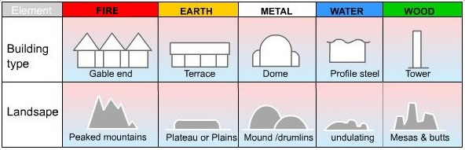
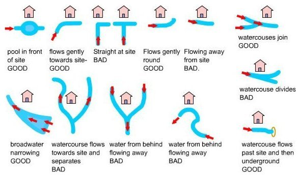
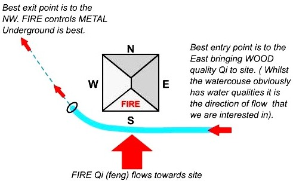

The environment in which site is located and the form of the site itself is important in a Feng Shui assessment. The table below illustrates how the form is read in relation to the 5 elements.

The Water Dragon is an important factor in assessing a site. The diagram below shows the main examples of watercourse flows.
These diagrams also apply to road positions and flows of traffic. A further level of detail can be applied using the 5 Element Cycle, plotting watercourse flows to 7.5 degree accuracy.

The diagram below shows simply how to position a water-course to optimum beneficial effect ( for a south facing site).
The WATER DRAGON calculation is basically derived using the 5 ELEMENTS CYCLE in respect of directional flows: accuracy is typically to 7.5 degrees.
NB: The energetic interaction at the main entrance is FIRE Qi ( feng ) flowing towards the site. The watercourse brings an active and newly replenished source of WOOD quality Qi (flowing from the east ). WOOD feeding FIRE is very beneficial (see the 5 element section). The best exit of the watercourse is to the NW (METAL) and underground as FIRE controls METAL.
